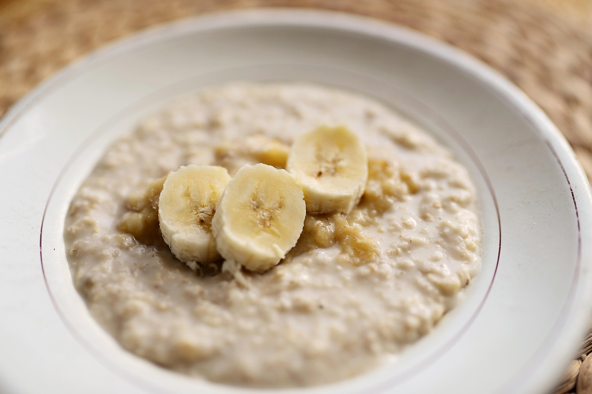

Tazon de Avena con Fruta

La lasagna de odin
¿No sabes que cenar? La avena es perfecta para conciliar el sueño y con un toque de leche condensada, yogurt griego y fresas, haran que sea delicioso.
Ingredientes
- 1/2 Taza de avena
- 2 Cucharadas de chia
- 1/2 Taza de agua
- 1/4 De taza de Leche Evaporada
- 1/4 De taza de yogurt griego natural
- 1/2 Manzana
- 4 Fresas
Pasos
- Mezcla la avena con la chia, el agua
y la Leche Evaporada. Refrigera y
deja reposar de 2 a 3 horas.
- Agrega el yogurt, la manzana y las fresas.
- Ofrece al momento.
Home